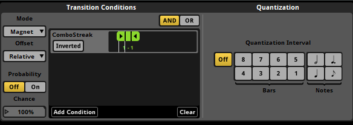

Tempo changes without pitch shift
- Problem
- The music had to speed up with the player's combo streak, but pitch-shifting a single track would break the beat callbacks tied to the FMOD tempo-marker grid.
- Approach
- Each song is arranged at several escalating tempos on one timeline event. Magnet Regions with Relative Offsets, driven by
ComboStreakconditions, jump to the matching position in the faster version, so there are no audible cuts. Since each tempo has a different real duration, every section's end timestamp is stored as an FMOD User Property and parsed in C# (LoadMarkers/ParseTimeToMs) to keep the level timer correct. A lookup then returns the time remaining until the next marker of a given name, from the current timeline position. - Result
- The tempo follows the player's performance while beat-synced logic keeps working. The setup is designed to be reusable as an FMOD template across levels.

View code
Load end times from User Properties
// Read each tempo section's end time from FMOD User Properties ("mm:ss" strings)
void LoadMarkers()
{
FMOD.Studio.EventDescription desc;
musicInstance.getDescription(out desc);
int count;
desc.getUserPropertyCount(out count);
List<FMOD.Studio.USER_PROPERTY> properties = new List<FMOD.Studio.USER_PROPERTY>();
for (int i = 0; i < count; i++)
{
FMOD.Studio.USER_PROPERTY prop;
desc.getUserPropertyByIndex(i, out prop);
if (prop.type == FMOD.Studio.USER_PROPERTY_TYPE.STRING)
properties.Add(prop);
}
// Alphabetical order of the property names keeps the timeline order
properties.Sort((a, b) => string.Compare(a.name, b.name, StringComparison.OrdinalIgnoreCase));
foreach (var prop in properties)
timelineInfo.allMarkers.Add(new MarkerInfo(prop.name, ParseTimeToMs(prop.stringValue())));
}
// "1:23" -> 83000 ms
private int ParseTimeToMs(string timeString)
{
string[] parts = timeString.Split(':');
if (parts.Length != 2) return 0;
int minutes = int.Parse(parts[0].Trim());
int seconds = int.Parse(parts[1].Trim());
return (minutes * 60 + seconds) * 1000;
}
Time remaining to the next marker
// Index of the closest marker with this name that is still ahead of the playhead
public int GetNextMarkerIndexByName(string markerName)
{
musicInstance.getTimelinePosition(out int currentPos);
int closestIndex = -1;
int smallestDiff = int.MaxValue;
for (int i = 0; i < timelineInfo.allMarkers.Count; i++)
{
var marker = timelineInfo.allMarkers[i];
if (marker.name == markerName)
{
int diff = marker.position - currentPos;
if (diff > 0 && diff < smallestDiff)
{
smallestDiff = diff;
closestIndex = i;
}
}
}
return closestIndex;
}
// Milliseconds left until that marker, from the current timeline position
public int GetTimeRemainingToMarker(int markerIndex)
{
musicInstance.getTimelinePosition(out int currentPos);
if (markerIndex < 0 || markerIndex >= timelineInfo.allMarkers.Count)
return -1;
return timelineInfo.allMarkers[markerIndex].position - currentPos;
}